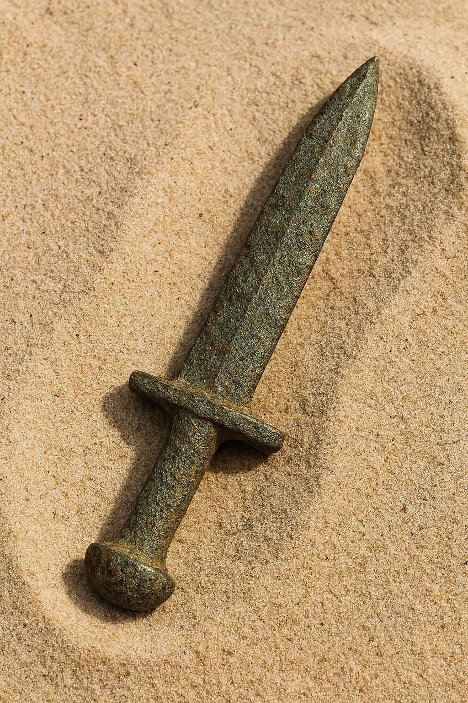

Material: Crushed limestone and sand-tempered clay mixture.
Size/Weight/Shape: Approximately 30 cm tall and 20 cm wide, slender neck, rounded midsection. Weighs roughly 5-7 kg.
Preservation State: Slight erosion, primarily intact, erosion at rim and base, faded striping likely due to burial abrasion.
Location Found: Western banks of the Nile River in Egypt, unearthed near a necropolis, a probable burial site for nobility.
Likely Purpose: Used as a ritualistic container, stored scented oils or grains. Patterning implies ceremonial, not daily use.
Evidence of Use: Both olive oil and myrrh microscopic residue was detected. Abrasions on the exterior suggest frequent handling.
Manufacture Clues: Interior oil marks denote hand-made construction.
Found With: Faience beads and linen fabric fragments.
Burial or Habitat Context: Burial location below a sandstone table in a tomb chamber.Soil strata data denote a dry season.
Symbolism: Coloring contrast, black and sand color, symbolize life and death, sun and shadow.
Comparison: Similar to Middle Kingdom vessels found in Thebes, but stylistic expressions similar to Lower Egyptian workshops. The stripe motif echo Mesa temple wall friezes.
Kohl Pot
Material: Alabaster, hand carved with metal tools, known for its durability.
Size/Weight/Shape: Approximate height 8 cm and 6 cm in diameter, weight 300 grams: rounded body, flat base, short neck.
Found With: Faience bead necklace, pottery fragments and a tattered linen pouch.
Burial or Habitat Context: Positioned beside the body, sandals aligned with ankles.
Symbolism: Sandals symbolized purification, protection and preparation to walk in the afterlife with the gods.
Comparison: More modest than gilded leather examples from royalty tombs but structurally similar to sandals from Deir el-Medina artisan burials.
Egyptian Iron Dagger

Material: Forged iron, with surface pitting and oxidation. Handle composition is gold, glass, colored stone or faience inlays.
Size/Weight/Shape: Estimated length 20-30 cm, moderate weight for handheld use, long slender, tapered tip with doubl-edge blade. Handle is richly decorated, cylindrical.
Preservation State: Shows wear, rust, handle is pristine, clear and detailed ornamentation.
Location Found: Not specified. Likely an Egyptain royal or military grave due to stones and craftsmanship.
Likely Purpose: Ceremonial weapon, reserved for burial assemblage.
Evidence of Use: Surface abrasion may suggest actual or symbolic use.
Manufacture Clues: High level of craftsmanship, iron is hammered or forged, joined components with precision inlay work.
Found With: Jewelery, shields, and ceremonial regalia, part of a grave groupoing.
Burial or Habitat Context: Most likely a tomb setting.
Symbolism: Iron blade is linked with meteoric iron which was believed to hold celestial power. The god and glass handle symbolized status, divine protection and represented solar cults.
Comparison: Similar ceremonial weapons were discovered in Assyrian and Hittite tombs.
Ceremonial Palette Fragment
Material: Siltstone, dark green-brown, common in Naqada artifacts.
Size/Weight/Shape: Between 10 to 15 cm wide, form is flat, lightweight and portable.
Function (Hypothesized): Ritual container for oils or grains.
Location Found: Burial chamber beneath sandstone table, Nile west bank.
This black and gold jug fragment is believed to have served a ceremonial function, likely used in funerary or ritual contexts. Unearthed near a necropolis associated with elite burials, its preserved form and symbolic striping suggest it was not intended for daily use but for sacred rites.
The vessel's slender neck and rounded midsection reflect hand crafted design, with interior oil marks confirming artisanal manufacture. Microscopic residue of olive oil and myrrh, along with exterior abrasions, indicate repeated ritual handling. Faded horizontal striping, once vivid, likely eroded due to burial abrasion over centuries.
Associated finds include faience beads and linen fragments, reinforcing its ceremonial role. The vessel's color contrast, black and sand, symbolizes life and death, sun and shadow, echoing dualistic themes in Egyptian cosmology. Though similar in form to Middle Kingdom vessels from Thebes, its stylistic details align more closely with Lower Egyptian workshops. The stripe motif parallels friezes found on Mesa temple walls, suggesting a shared symbolic grammar across regions.
Kohl Pot
3,200 Years BP Saqqara Necropolis
Material: Alabaster, hand carved with metal tools.
Function (Hypothesized): Cosmetic container for kohl application.
Location Found: Discovered near Saqqara necropolis, a private tomb.
Associated items, a shell palette, bronze applicator, and reed brush, reinforce its cosmetic function. The pot's craftsmanship and burial context denote high status and symbolic value; kohl was believed to offer magical protection.
Like Theban examples, this vessel's higher lead content suggests regional variation in recipes and techniques. Its presence in a private tomb reflects the intersection of beauty, ritual, and identity in elite Egyptian burial practices.
Bronze Kohl Applicator
22,000 Years BP Dorsai Scarp Ridge Composite Stone
Material: Made from bronze, a copper alloy, cosmetic tool in New Kingdom Egypt
Function (Hypothesized): Ceremonial or calendrical archway
Location Found: Excavated from a tomb or domestic context given its cosmetic use.
This precision-cut fragment is believed to be part of a ceremonial archway aligned with seasonal or celestial markers. Recovered from a wind stabilized ridge, its remote setting and foundation of deliberate stonework suggest it served as a passage or observation point, likely sacred in nature.
The keystone features a 7-point symmetrical symbol array, possibly calendrical, and was carved with high accuracy using materials not native to the site. Surrounding finds (charcoal flecks, obsidian bead fragments, crushed pigment) point to ritual activity and intentional deposition. While it shares geometric similarities with the later standing stones at Aetha-Zul, this fragment displays a distinct symbolic grammar and a more advanced material blend, indicating a unique, localized cultural expression.
Palm Leaf Sandals
22,000 Years BP Dorsai Scarp Ridge Composite Stone
Material: Palm fiber and braided halfa grass.
Function (Hypothesized): Ceremonial or calendrical archway
Location Found: Discovered in a shaft tomb near the Theban Necropolis, sealed inside a wooden box.
This precision-cut fragment is believed to be part of a ceremonial archway aligned with seasonal or celestial markers. Recovered from a wind stabilized ridge, its remote setting and foundation of deliberate stonework suggest it served as a passage or observation point, likely sacred in nature.
The keystone features a 7-point symmetrical symbol array, possibly calendrical, and was carved with high accuracy using materials not native to the site. Surrounding finds (charcoal flecks, obsidian bead fragments, crushed pigment) point to ritual activity and intentional deposition. While it shares geometric similarities with the later standing stones at Aetha-Zul, this fragment displays a distinct symbolic grammar and a more advanced material blend, indicating a unique, localized cultural expression.
Egyptian Iron Dagger
22,000 Years BP Dorsai Scarp Ridge Composite Stone
Material: Forged iron, with surface pitting and oxidation. Handle composition is gold, glass, colored stone or faience inlays.
Function (Hypothesized): Ceremonial or calendrical archway
Location Found: Not specified. Likely an Egyptain royal or military grave due to stones and craftsmanship.
This precision-cut fragment is believed to be part of a ceremonial archway aligned with seasonal or celestial markers. Recovered from a wind stabilized ridge, its remote setting and foundation of deliberate stonework suggest it served as a passage or observation point, likely sacred in nature.
The keystone features a 7-point symmetrical symbol array, possibly calendrical, and was carved with high accuracy using materials not native to the site. Surrounding finds (charcoal flecks, obsidian bead fragments, crushed pigment) point to ritual activity and intentional deposition. While it shares geometric similarities with the later standing stones at Aetha-Zul, this fragment displays a distinct symbolic grammar and a more advanced material blend, indicating a unique, localized cultural expression.
Ceremonial Palette Fragment
22,000 Years BP Dorsai Scarp Ridge Composite Stone
Material: Siltstone, dark green-brown, common in Naqada artifacts.
Function (Hypothesized): Ceremonial or calendrical archway
Location Found: Egyptian burial site, posibly Gerzeh or Abydos in upper Egypt.
This precision-cut fragment is believed to be part of a ceremonial archway aligned with seasonal or celestial markers. Recovered from a wind stabilized ridge, its remote setting and foundation of deliberate stonework suggest it served as a passage or observation point, likely sacred in nature.
The keystone features a 7-point symmetrical symbol array, possibly calendrical, and was carved with high accuracy using materials not native to the site. Surrounding finds (charcoal flecks, obsidian bead fragments, crushed pigment) point to ritual activity and intentional deposition. While it shares geometric similarities with the later standing stones at Aetha-Zul, this fragment displays a distinct symbolic grammar and a more advanced material blend, indicating a unique, localized cultural expression.